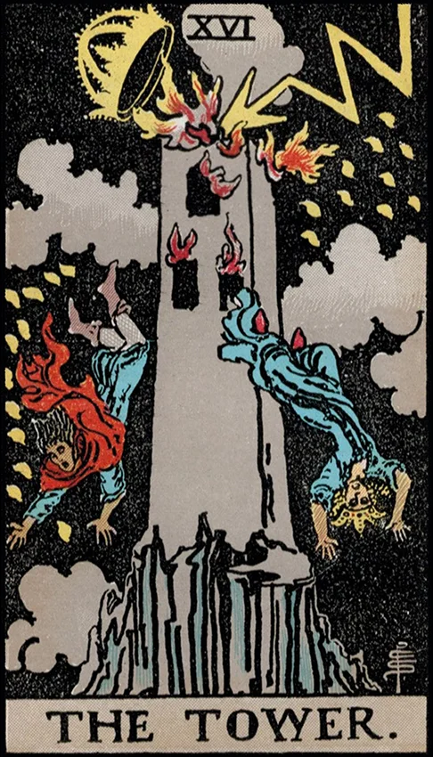

| Archetype | The Destroyer, The Crisis, The Awakener, The Shock of Revelation |
| Psychological Role | Sudden collapse of the ego's false structures and defenses |
| Ego Status | The ego is forcibly confronted with its limitations and illusions |
| Symbolic Number | 16 — disruption, cleansing, divine intervention |
| Shadow Aspect | Breakdown, denial, devastation, loss of control |
| Spiritual Meaning | Sudden enlightenment or awakening through upheaval |
| Unconscious Connection | The unconscious erupts to dismantle what no longer serves truth |
| Journey Theme | Destruction as a necessary part of transformation and rebirth |
| Jungian Goal | Liberation from false ego structures; the path to deeper truth |